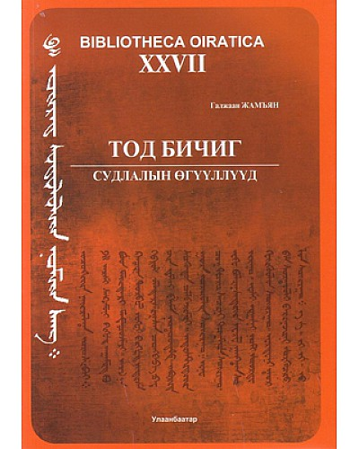

|  |
Дүгнэлт2012 онд тод бичиг судлаач эрдэмтэн Г.Жамъяаны мэндэлсний 80 жилийн ойд зориулан түүний туурвисан эрдэм шинжилгээ, заах аргын өгүүллүүдийг зохиогчийн бичсэн он дарааллын дагуу байрлуулан эмхтгэж уншигч олноо өргөн барьж байна. Ингэснээр нэгэн судлаачийн эрдэм шинжилгээний ажлын хөгжил, сэдвийн өөрчлөлт зэргийг тухайлан харах боломжтойгоос гадна залуу судлаач,оюутан залуучуудад чухал гарын авлага болно гэдэгт итгэж байна. |
|---|
Гарах